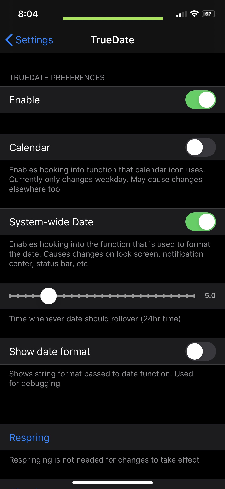

Compatibility
- Built for iOS 13 but probably works for older versions
Description
- TrueDate stops the date on your phone from changing until a specific time. Useful for people who stay up late. Configure options in settings.
screenshots

changelog
-
1.0.5
- Added sunset feature
-
1.0.4
- Added support for arm64e
-
1.0.3
- Removed calendar feature for now
-
1.0.2
- Fixed Wednesday bug
-
1.0.1
- Preferences should work correctly on fresh installs now
-
1.0.0
- Initial Release